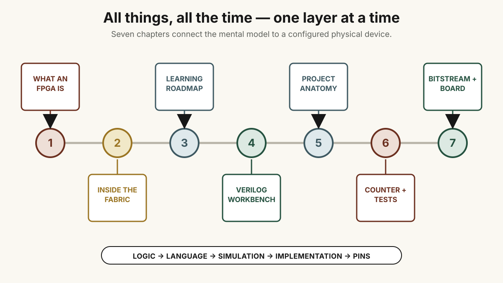

Chapter 1Available
What An FPGA Is
Separate fixed ASIC wiring from field configuration, follow the two implementation flows, and build a sound model of concurrent logic plus clocked state.
Seven-chapter course · logic to pins
An FPGA lets many pieces of a digital machine exist and react at once. This course makes that sentence physical.
Start with Boolean functions and clocked state. Look inside the programmable fabric. Write a small Verilog design, make a testbench prove what it does, distinguish simulation from implementation, then follow the design through synthesis, place-and-route, a bitstream, and a board.
This is a careful publication of my original “All Things, All the Time” curriculum. The material has been divided by concept instead of compressed into a summary: each source idea has one home, repeated links have been consolidated, old tool instructions are preserved as historical context, and the explanations and labs have been expanded where the manuscript only left a prompt.

Chapter 1Available
Separate fixed ASIC wiring from field configuration, follow the two implementation flows, and build a sound model of concurrent logic plus clocked state.
Chapter 2Available
Zoom from a two-dimensional fabric to a vendor-specific logic block, then into LUTs, flip-flops, local routing, and global interconnect.
Chapter 3Available
Order Boolean logic, Logisim, HDL syntax, simulation, physical I/O, CMOS depth, and ASIC work without confusing one layer for another.
Chapter 4Available
Install a compact Ubuntu toolset, compile and run the included counter, inspect a VCD waveform, and use Verilator when C++ integration is the better boundary.
Chapter 5Available
Understand source files, module hierarchy, the selected top, the design-under-test, testbench stimulus and checks, and board constraints.
Chapter 6Available
Turn a real counter datasheet into an executable behavioral contract, then grow from the included four-bit lab into preset, direction, decade, and cascade behavior.
Chapter 7Available
Use a pinned open tool bundle or inspect the individual Yosys, nextpnr, and IceStorm stages. See exactly where the netlist, constraints, placed design, packed bitstream, loader, and board enter—and how the original Alchitry Cu instructions fit as historical provenance.
Simulation and hardware answer different questions. A testbench can prove functional claims about the model. It does not assign a package pin, close timing, establish signal integrity, or demonstrate a physical board. The course keeps those evidence layers separate.
An analogy is a temporary handle. SQL, publish/subscribe, software I/O, an Arduino loop, and reactive programming each illuminate one part of HDL thinking. None is the machine itself. Verilog describes concurrent hardware processes; statements inside a procedural block still execute according to the language’s ordering rules.
The original manuscript mixed foundational explanations, a topic list, setup notes, language questions, a first-circuit proposal, and a quoted 2022 Alchitry Cu walkthrough. This edition keeps those ideas but gives each one an explicit destination.
The old walkthrough is linked and credited in chapter 7, then replaced by a current, independently written route. That preserves provenance without silently republishing somebody else’s prose or asking a beginner to compile years of tool history before they can blink an LED.